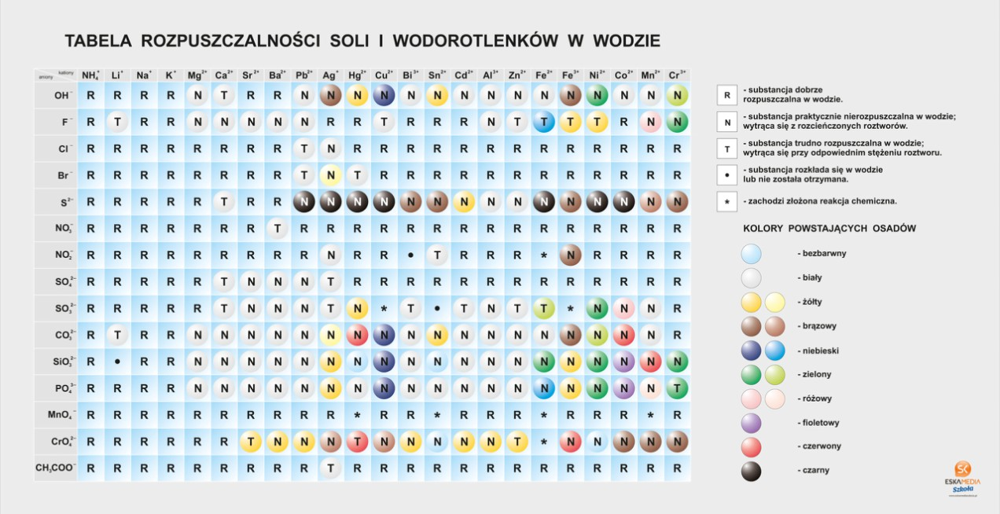

Klasa 7A
wychowawca Ewa Lipińska-KrzemianowskaWYCHOWANIE FIZYCZNE/CHŁOPCY
Temat : Ćwiczenia ogólnorozwojowe
Uwagi wstępne :
- ćwicz tylko wtedy,kiedy jesteś zdrowy
- staraj się ćwiczyć w stroju sportowym
- ćwiczenia wykonuj przy otwartym/uchylonym oknie
- ćwiczenia główne poprzedź rozgrzewką
- pamiętaj o rozluźnianiu mięśni pomiędzy poszczególnymi ćwiczeniami
Propozycja ćwiczeń :
- Bieg w miejscu ok.3-4 min.
- z wysokim unoszeniem kolan
- z uderzaniem piętami o pośladki
- z klaskaniem pod kolanami(raz pod prawym,raz pod lewym)
- Stojąc w lekkim rozkroku,wykonaj 10 półprzysiadów -2x
- W siadzie prostym wykonaj skłon,raz do prawej,raz do lewej nogi - po 5
- W leżeniu tyłem (podkurcz nogi,ramiona wzdłuż tułowia) wykonaj
2 x 12 brzuszków
- Stojąc w lekkim rozkroku,wykonaj po 10 przeskoków
- w przód i w tył
- w bok,w prawą stronę i z powrotem
- w bok w ,lewą stronę i z powrotem
- Stojąc w pozycji zwartej (nogi złączone, ramiona wzdłuż tułowia) ,
wykonaj 2 x 10 pajacyków
- W siadzie prostym,wykonaj po 5 skłonów z pogłębianiem,raz do lewej,
raz do prawej nogi
- W leżeniu tyłem, unieś tułów ( podpór bioder ramionami),wykonaj
tzw. rowerek - 2 x po 30 sek.
- Ćwiczenie oddechowe - stojąc w postawie swobodnej,unieś ramiona w górę
( wdech),wykonaj skłon z pogłębianiem ( wydech ) - 5 x
Każdą serię powtórz 2 razy,przerwa pomiędzy seriami ok.10 min.
Wykonując ćwiczenia w domu wspomagaj się nagraniami video dostępnymi
w serwisie internetowym You Tube ,wybierając ćwiczenia dostosowane
do Twoich możliwości.
Dziękuję
ZAJĘCIA TERAPEUTYCZNO -USPRAWNIAJĄCE -PLASTYCZNE
Temat: Kartka na specjalne okazje -serduszko
Dzisiaj zrobimy kolorową, składaną kartkę w kształcie serca z kwiatkiem w środku.
Obejrzyj film. Zobaczysz jak w prosty sposób można zrobić śliczną kartkę.
https://www.youtube.com/watch?v=Kd8W08z3XN8
Zadanie:
Przygotuj materiały, które będą nam potrzebne do wykonania kolorowej kartki: jedna kartka biała, kartki kolorowe na przykład różowa, czerwona i zielone, klej, nożyczki.
Wzorując się na filmie zrób swoją kartkę okolicznościową.
Narysuj dwa serca różnej wielkości ołówkiem – jedno na białej kartce a drugie na kolorowej i wytnij. Naklej serce mniejsze na większe.
Narysuj, wytnij i przyklej łodygi i liście.
Złóż kartkę z serca na pół tak, żeby liście i łodyga były w środku kartki.
Narysuj kwiatki – tulipany na kolorowych kartkach i wytnij. Potrzebujesz 6 jednakowej wielkości tulipanów.
Złóż na pół wycięte kwiatki.
Posmaruj jeden bok kwiatka klejem i przyklej drugi kwiatek.
W ten sposób sklej ze sobą wszystkie kwiatki.
Połączone kwiatki wklej do środka kartki.
Kartka gotowa!
Pamiętaj o zachowaniu bezpieczeństwa podczas posługiwania się ostrymi narzędziami.
ZAJĘCIA REWALIDACYJNE - USPRAWNIANIE MOWY- zestaw ćwiczeń wysłany na grupę logopedyczną Messenger (Patrycja , Laura )
ZAJĘCIA TERAPEUTYCZNO -USPRAWNIAJĄCE -RUCHOWE
Temat i zadanie wysłane pocztą elektroniczną do rodziców.
ZAJĘCIA TERAPEUTYCZNO -USPRAWNIAJĄCE -JĘZYK POLSKI ( Emilka, Julka, Kinga, Laura, Sara)
Oglądnij fragment filmu – zwróć uwagę na spowiedź Księdza Robaka , napisz kim był i co zrobił?
https://www.youtube.com/watch?y=tb61Kyz41g
CHEMIA
Temat: Sposoby otrzymywania wodorotlenków
Obejrzyj filmik (pierwsze 4 minuty)
https://www.youtube.com/watch?v=Btjc4BfviNU
Napisz reakcję powstawania wodorotlenku glinu i miedzi.
Co oznaczają strzałeczki w dół w zapisie reakcji
Wejdź na wikipedię - wpisz "osad (chemia)"
Zapisz definicję w zeszycie.
Przyjrzyj się tabeli rozpuszczalności soli i wodorotlenków w wodzie.
Wypisz 3 nazwy wodorotlenków, które nie rozpuszczają się w wodzie.
GEOGRAFIA
Temat: Wpływ transportu na rozwój przemysłu i usług.
Notatka:
Najważniejszą funkcją transportu jest przewóz osób i ładunków. Z tego powodu sieć transportowa i związana z nią infrastruktura są istotne dla rozwoju wielu różnych rodzajów działalności gospodarczej.
Przedsiębiorstwa przemysłowe, centra logistyczne i handlowe, a także inne firmy usługowe są lokalizowane głownie w pobliżu autostrad i dróg ekspresowych. Umożliwia to szybki i sprawny przeładunek dużej ilości towarów oraz ich transport.
Na Bielanach Wrocławskich są centra logistyczne i rozrywkowo-handlowe. Splatają się tam m.in. autostrada A4, droga ekspresowa S8 oraz droga krajowa nr5.
https://www.youtube.com/watch?v=LLha2r0I0gU
Zobaczcie teraz centrum logistyczne w okolicy Wrocławia ( to obiekty magazynowe wraz z infrastrukturą przeładunkową, w których świadczy się usługi związane z przyjmowaniem, magazynowaniem i dalszym rozprowadzaniem towarów)
https://www.youtube.com/watch?v=2b42GwPBOe0
JĘZYK POLSKI
Temat: Człowiek i prawo
Notatka
Związki frazeologiczne z wyrazem „prawo” zostały podzielone na dwie grupy:
-wyrażenia o znaczeniu dosłownym
Prawo: administracyjne, cywilne, łaski, karne, międzynarodowe, rzymskie, zwyczajowe
-wyrażenia o znaczeniu metaforycznym
Prawo: pięści, nieubłagane, twarde, wilcze, nieludzkie, drakońskie, dżungli
ZADANIE
1.Wyjaśnij związek frazeologiczny „prawo dżungli”
http://www.edupedia.pl/words/index/show/475959_slownik_frazeologiczny-prawo_dzungli.html
- Uzupełnij podane zwroty rzeczownikiem „ prawo” w odpowiedniej formie;
przestrzegać ……
działać w imieniu …..
dochodzić swoich…..
MATEMATYKA
Temat : Pole powierzchni graniastosłupów.
zapisz do zeszytu:
Jeśli obliczymy pole każdej ściany graniastosłupa, a następnie je do siebie dodamy otrzymamy pole powierzchni całkowitej graniastosłupa co wyrażamy wzorem ogólnym:
P? = 2 Pp + Pb
Pc to pole całkowite
Pp- pole podstawy (mamy dwie podstawy)
Pb to pole boczne graniastosłupa.
Zobacz filmy:
zad.1..Zapisz i przerysuj przykłady z filmu do zeszytu.
zad.2..Zapisz i przerysuj przykład z filmu do zesz
RELIGIA
Temat: Pan Jezus posyła Ducha Świętego.
Pięćdziesiąt dni po Zmartwychwstaniu Pańskim na zebranych w wieczerniku apostołów zstąpił Duch Święty. Dokładnie tak, jak zapowiedział to Pan Jezus tuż przed Wniebowstąpieniem.
Dzieje Apostolskie podają, że: "Kiedy nadszedł wreszcie dzień Pięćdziesiątnicy, znajdowali się wszyscy razem na tym samym miejscu. Nagle dał się słyszeć z nieba szum, jakby uderzenie gwałtownego wiatru, i napełnił cały dom, w którym przebywali. Ukazały się im też języki jakby z ognia, które się rozdzieliły, i na każdym z nich spoczął jeden. I wszyscy zostali napełnieni Duchem Świętym, i zaczęli mówić obcymi językami, tak jak im Duch pozwalał mówić" (Dz 2, 1-4) .
https://www.youtube.com/watch?v=dajkcwd1ogg
Wiatr i ogień to symbol działania Trzeciej Osoby Bożej. Nad głowami Apostołów ukazały się języki ognia, który oświeca i rozgrzewa. Tak oświecające działanie ma łaska Ducha Świętego, dawcy bezcennych darów. Dzięki tym darom kształtujemy siebie na obraz i podobieństwo Boga. Wszystkie te skarby może otrzymać każdy z nas, jeżeli w swym sercu stworzy odpowiednią atmosferę i otworzy się na działanie Ducha Świętego.
Oglądnijcie lekcję religii na temat Zesłania Ducha świętego i Święta Piędździesiątnicy
https://www.youtube.com/watch?v=9UDaWhfy608
DORADZTWO ZAWODOWE
Drodzy uczniowie dziś 2 ostatnie tematy doradztwa
- Czym należy się kierować przy wyborze szkoły?
- Co dla mnie oznacza odpowiedzialność w pracy
Pozdrawiam was serdecznie wasz pedagog szkolny Marek Bielecki
CHEMIA
Temat: Wodorotlenek wapnia.
Obejrzyj filmik
https://www.youtube.com/watch?v=xccANqqaOuc
Napisz zapis reakcji gaszenia wapna palonego.
Na jaki kolor barwi się fenoloftaleina? Dlaczego?
Obejrzyj filmik
https://www.youtube.com/watch?v=4dqE45snIXE
Napisz zapis reakcji prażenia węglanu wapnia.
Co otrzymujemy w wyniku reakcji?
Dlaczego woda wapienna mętnieje?
FIZYKA
RACA, MOC, ENERGIA MECHANICZNA
Temat : Praca mechaniczna
zapisz do zeszytu:
Praca mechaniczna (W) jest wykonywana, gdy na ciało działa siła (F) i gdy to ciało ulega przemieszczeniu (s) lub odkształceniu. Siła o kierunku prostopadłym do kierunku przemieszczania się ciała, w sensie fizycznym nie wykonuje pracy.
W = F ˇ
s
Jednostką pracy jest dżul (J)
1 dżul (1 J) = 1 Niuton (1N) ˇ
1 metr (1m)
zad.1.
Zobacz film :https://www.youtube.com/watch?v=T7KEvFOXAfk
Podaj przykłady wykonywania pracy w ujęciu fizyki.
Od czego zależy praca ?
MATEMATYKA
Temat : Siatki graniastosłupów.
Zobacz film:
https://www.youtube.com/watch?v=n9mjsWAmbQM
zapisz do zeszytu:
Siatką graniastosłupa nazywamy wszystkie rozłożone ściany graniastosłupa i ułożone tak aby dało się złożyć z nich ten graniastosłup.
Zad.1.
Narysuj siatki:
sześcianu o krawędzi 1 cm
prostopadłościanu o wymiarach 3cm, 2cm, 1 cm
zad.2.
Wykonaj do zeszytu ćwiczenie 2a,b, z zeszytu ćwiczeń.str.112 (114) pod tematem siatki graniastosłupów. https://flipbook.apps.gwo.pl/display/2364
JĘZYK POLSKI
Temat: Słowianie – pobratymcy w słowie
NOTATKA
Słowianie są jedną europejską wspólnotą, którą łączą więzi kulturowe i językowe. Nie można dokładnie ustalić czasu i miejsca osiedlania się pierwszych Słowian, jednak pewne jest to, że pochodzą z ludów indoeuropejskich
Byli niepiśmienni. Najstarsze przekazy o tej grupie etnicznej pochodzą z VI w. z relacji germańskiego historyka.
Plemiona słowiańskie posługiwały się bardzo podobnymi dialektami, nie było więc problemów z porozumiewaniem się- stąd przypuszczenie, że nazwa „Słowianin” oznaczała „pobratymiec w języku, dziecko tej samej mowy”.
Obecnie Słowianie są największą grupą etniczną Europy, liczącą około 210 milionów osób.
Język prasłowiański – wspólny język dawnych Słowian, z którego później wykształciły się poszczególne języki słowiańskie
ZADANIE
Narysuj drzewo genealogiczne języka polskiego . Wejdź w link
:
JĘZYK ANGIELSKI
Lesson
Topic: My day schedule. Mój plan dnia.
Dzisiaj wypełnimy sobie godzinami nasz plan dnia, aby poćwiczyć podawanie godzin.
Have fun! Miłej zabawy!
What time do you get up? – O której godznie wstajesz?
I get up at ……………………………………. – Ja wstaję o ……………………..
What time do you eat your breakfast? - O której godznie jesz śniadanie?
I eat my brakfast at …………………………………………. - Jem śniadanie o ……………………………
What time do you do your homework? - O której godzinie odrabiasz lekcje?
I do my homework at ……………………………………… - Ja odrabiam lekcje o …………………………………….
What time do you eat your dinner? - O O której godznie jesz obiada
I eat my dinner at……………………………………….. – Ja jem obiad o …………………………………………
What time do you watch TV? - O której godznie oglądasz telewizję?
I watch tv at …………………………………… - Ja oglądam telewizję o ………………………………………….
- What time do you eat your supper?
- O której godzinie jesz kolację?
I eat my super at ……………………………………………. – Ja jem kolację o ………………………………………..
What time do you take a shower/bath? - O której godznie bierzesz prysznic/kąpiel?
I take a shower/bath at …………………………………. – Ja biorę prysznic/kąpiel o ……………………………
What time do you go to sleep? - O której godznie idziesz spać?
I got to sleep at …………………………………………. – Ja idę spać o ………………………………………………..
Powodzenia!
ZAJĘCIA TERAPEUTYCZNO -USPRAWNIAJĄCE -TANECZNE
SARA M,PATRYCJA B,LAURA M,SEBASTIAN CH,MACIEJ K
Dzień dobry .Mam nadzieję ,że nauczyliście się pierwszej części układu. Dzisiejsze zadanie to nauka na liczenie drugiej części choreografii. Powoli wprowadzamy pracę ramion.
ZAJĘCIA TERAPEUTYCZNO -USPRAWNIAJĄCE -RUCHOWE
Temat i zadanie wysłane pocztą elektroniczną do rodziców.
ZAJĘCIA ARTYSTYCZNE -MUZYCZNE (Patryk H., Emilia O., Oleh K.)
Temat i zadanie wysłane pocztą elektroniczną do rodziców.
ZAJĘCIA REWALIDACYJNE- USPRAWNIANIE MOWY
Zestaw ćwiczeń wysłany na grupę logopedyczną Messenger ( Julia ), na messenger rodzica (Damian), skrzynkę e-mail rodzica (Kinga).
TECHNIKA/PRACOWNIA GOSPODARSTWA DOMOWEGO
Przepisz do zeszytu temat lekcji i podpunkty.
Temat: Ozdabianie potraw
1.Proste sposoby dekorowania potraw
- Narzędzia do wykonywania dekoracji potraw
Kliknij na link poniżej. Zobaczysz w jaki sposób można udekorować różne potrawy.
Często dekoracje wykonane są za pomocą specjalnych narzędzi. Ozdobione potrawy, w których użyto tych narzędzi są bardzo efektowne .
Kliknij na link poniżej. Zobaczysz jakich narzędzi używa się do dekoracji potraw.
https://www.youtube.com/watch?v=psGL8asaoAc
Sposoby dekorowania potraw, które można zrobić w domu zobaczysz poniżej klikają na linki
https://www.youtube.com/watch?v=MBV4UnGCFrw
https://www.youtube.com/watch?v=A4T9yq64hyA
Pamiętaj! Jeśli przygotowujesz posiłek w domu musisz dbać o bezpieczeństwo i higienę. Zawsze myj ręce, owoce i warzywa. Używaj czystych naczyń i narzędzi kuchennych. Dbaj o czystość miejsca pracy. Bądź ostrożny podczas posługiwania się ostrymi narzędziami i przedmiotami.
TECHNIKA JACEK
Klasa 7A Technika / grupa stolarnia
Proszę zapisać w zeszycie temat i pierwsze zdanie:
Lekcja
Temat: Połączenia gwintowe.
Połączenia gwintowe powstają wskutek skręcenia ze sobą dwóch gwintowanych elementów (śruby i nakrętki, rury i łącznika, oprawki i żarówki, itp.).
Przeczytaj.
Gwinty występujące w technice możemy dzielić według szeregu kryteriów:
Podział ze względu na kształt zarysu:
- a) gwinty trójkątne
- b) gwinty trapezowe symetryczne
- c) gwinty trapezowe niesymetryczne
- d) gwinty rurowe
- e) gwinty okrągłe
Podział ze względu na rodzaj wymiaru:
- a) gwinty zewnętrzne
- b) gwinty wewnętrzne
Ze względu na kierunek obrotu
- a) gwinty prawe
- b) gwinty lewe
Ze względu na jednostkę miary
- a) gwinty calowe
- b) gwinty metryczne
A jak się wykonuje gwint? Obejrzyjcie film.
https://www.youtube.com/watch?v=iu1xKmYNjQ0
Zadanie
Napisz w zeszycie:
Czym można wykonać gwint zewnętrzny (śrubę)?
Czym można wykonać gwint wewnętrzny (nakrętkę)?
J ANGIELSKI
Lesson
Topic: Podawanie godziny do południa i po południu.
W dzisiejszych czasach wielu ludzi korzysta z zegarków elektronicznych, które działają w trybie 24 godzinnym. Nie da się pomylić godziny 8:00 rano z ósmą wieczorem, ponieważ zegarek elektroniczny wyświetli wieczorem godzinę 20:00. Jeżeli korzystamy jednak z zegarka analogowego (takiego ze wskazówkami), wtedy taki problem może wystąpić. Aby uniknąć pomyłek, przy podawaniu godziny w języku angielskim, dodaje się na końcu godziny dwie literki – „a.m.” lub „p.m.”
a.m. – after midnight – po północy
p.m. – prior midnight – przed północą
9:00 p.m. – dziewiąta wieczorem (czyli 21:00)
9:00 a.m. – dziewiąta rano
Reguła jest prosta – od północy do południa, przy podawaniu godziny dodajemy a.m.
Od południa do północy dodajemy zaś p.m.
Przećwiczmy to:
8:00 – rano – a.m.
8:000 – wieczorem – p.m.
A teraz wy: (wstawiamy a.m. lub p.m.)
4:15 rano - ………………….
3:30 rano - …………………
12:00 – w nocy (północ) - …. a.m. ….
12:00 – w południe - …………………
3:00 po południu - …………………
6:00 wieczorem - …………………
4:00 nad ranem - …………………
Mam nadzieję, że nie sprawi wam to kłopotów.
Pozdrawiam!
ZAJĘCIA POZALEKCYJNE TECHNICZNE
Temat i zadanie wysłane pocztą elektroniczną do rodziców.
ZAJĘCIA TERAPEUTYCZNO -USPRAWNIAJĄCE- MUZYCZNE
e-mail:muzykamg@wp.pl
(Patryk H. i Damian P.)
DZIEŃ MATKI -Pamiętajmy o naszych Mamach!
Obecnie w Polsce święto to przypada na 26 maja. W tym dniu matki są zwykle obdarowywane laurkami, kwiatami oraz różnego rodzaju prezentami przez własne dzieci. Święto to ma na celu okazanie matkom szacunku, miłości i podziękowania za trud włożony w wychowanie.
Polski ,,poeta piosenki"-Wojciech Młynarski i Jego znany utwór NIE MA JAK U MAMY
(kliknij w link i posłuchaj piosenki)
https://www.youtube.com/watch?v=oasNg-d-luA
następnie spróbuj zaśpiewać
(kliknij w link)
https://www.youtube.com/watch?v=_0Y54CrQ4CI
ZAJĘCIA TERAPEUTYCZNO -USPRAWNIAJĄCE-MATEMATYKA
(Laura, Sara, Kinga, Olek)
Ćwiczymy rysowanie graniastosłupów:
Zobacz film : https://www.youtube.com/watch?v=K7R-DW1-f6U
Narysuj bryłę:
- sześcianu
-graniastosłupa prostego trójkątnego
USPRAWNIANIE TECHNIK SZKOLNYCH- JĘZYK POLSKI (Maciej K.. Sebastian, Patrycja
Witam!
Oglądnij fragment filmu – zwróć uwagę na spowiedź Księdza Robaka , napisz kim był i co zrobił?
https://www.youtube.com/watch?v=tb61IKyz4lg
BIOFEEDBACK
Zadanie wysłane pocztą elektroniczną do mamy ucznia.
WYCHOWANIE FIZYCZNE/ DZIEWCZYNKI
Temat:Technika rzutu piłeczką palantową
zostańwdomu#trenuj w domu !!!
Potrzebne przybory :piłeczka lub zwinięte skarpetki
Przypominam o zasadach bhp podczas ćwiczeń w domu,tak jak na lekcjach wf w szkole. Proszę również pamiętać, że ćwiczymy tylko i wyłącznie jak jesteśmy zdrowi.
Pamiętajmy przed rozpoczęciem ćwiczeń ,aby zrobić 10 minutową rozgrzewkę (ćwiczenia pamiętamy z lekcji)
Dzisiaj nauczymy się techniki rzutu piłeczką.Proszę obejrzyjcie dokładnie filmik,a następnie w miarę możliwości powtórzcie. Ćwiczenia najlepiej wykonajmy na świeżym powietrzu.Dzisiaj liczy się technika rzutu,a nie kto najdalszy rzut.
https://youtu.be/UwDQ2gmrYoQ?list=TLPQMjEwNTIwMjDnc2YUc8aS9g
WYCHOWANIE FIZYCZNE -CHŁOPCY
Temat : Kształtowanie siły mięśni ramion i brzucha
Uwagi wstępne :
- ćwicz tylko jak jesteś zdrowy
- staraj się ćwiczyć w stroju sportowym
- ćwicz przy otwartym/uchylonym oknie
- przestrzegaj zasad bezpieczeństwa wykonując ćwiczenia
- ćwiczenia główne poprzedź rozgrzewką
- pamiętaj o rozluźnianiu mięśni pomiędzy poszczególnymi ćwiczeniami
Propozycja ćwiczeń :
- Bieg w miejscu ok. 4-5 min. ( zachowaj równe tempo)
- Stojąc w rozkroku wykonaj po 5 skłonów ,raz do jednej,raz do drugiej nogi
- Stojąc w pozycji zwartej ( nogi złączone,ramiona wzdłuż tułowia) wykonaj
2 x 10 pajacyków
- W leżeniu tyłem,nogi podkurczone,dłonie splecione na ramionach,
wykonaj 2 x 15 brzuszków
- Leżąc w podporze na wyprostowanych ramionach,wykonaj 2 x 10 pompek
( mogą być na kolanach )
- Stojąc w lekkim rozkroku wykonaj przysiad ( dłonie dotykają podłoża )
wykonaj dynamiczny wyskok , ramiona w górę - 10 x
- Leżąc, w podporze na łokciach i palcach stóp ( tułów wyprostowany)
wykonaj tzw. deskę - liczymy do 30, powtórz 3 razy
- Ćwiczenie oddechowe - stojąc w lekkim rozkroku,ramiona w górę ( wdech)
skłon z pogłębianiem ( wydech ) , powtórz 5 razy
Każdą serię powtórz 2 razy , przerwa pomiędzy seriami ok. 10 min.
Wykonując ćwiczenia w domu wspomagaj się nagraniami video dostępnymi
w serwisie internetowym You Tube , wybierając propozycje ćwiczeń
dostosowane do Twoich możliwości.
Dziękuję .
JĘZYK POLSKI
Temat: Czy znasz sławne Polki?
Posłuchaj!
https://slideplayer.pl/slide/435426/
Wypisz zaprezentowane Polki , jedną z nich opisz
HISTORIA
TEMAT: Rządy autorytarne w Polsce 1926-1939
Bardzo proszę obejrzeć filmik: https://www.youtube.com/watch?v=hisidMaOMiQ
NOTATKA:
Zamach majowy
czyli przejęcie siłą władzy w Polsce przez Józefa Piłsudskiego ( jego zwolenników) "Sanacja"
Przebieg zamachu
- 12 maja 1926r wojska podległy Piłsudskiemu, ruszają na Warszawę.
- J. Piłsudski i prezydent S. Wojciechowski spotykają się na Moście Poniatowskiego, by polubownie rozwiązać konflikt. Spotkanie bezowocne.
-W dniach 12-14 maja 1926r trwają w Warszawie walki pomiędzy zwolennikami Piłsudskiego.
-W nocy z 14 na 15 maja 1926r prezydent i premier podają się do dymisji.
Konstytucja Kwietniowa – 23 IV 1935r.
- ukoronowanie budowy systemu autorytarnego w Polsce(po zamachu majowym)
- najwyższą wartością było PAŃSTWO
- na czele państwa stał prezydent(odpowiadał przed „Bogiem i historią”)
- prezydent stanowił władzę nadrzędną wobec sejmu, senatu, sił zbrojnych, sądownictwa, administracji
GEOGRAFIA
Temat: Wpływ zmian politycznych i gospodarczych po 1989 roku na strukturę zatrudnienia.
Jako wprowadzenie do tematu przepiszcie notatkę:
W gospodarce wyróżnia się 3 główne działy – rolnictwo, przemysł i usługi.
Ponad połowa pracujących Polaków zatrudniona jest w usługach
Z rolnictwa utrzymuje się u nas kilkanaście procent pracujących – w przyszłości będzie to kilka procent, tak jak w krajach wysokorozwiniętych.
Zatrudnienie w przemyśle ustabilizowało się na poziomie ok. 30%,
Największe zatrudnienie w rolnictwie występuje na wschodzie Polski, a największe zatrudnienie w przemyśle – na południu, zwłaszcza na Górnym Śląsku. Usługi najlepiej rozwinęły się w dużych miastach.
Przeczytaj – zwróć uwagę do kogo należą polskie firmy
a)Wedel - najbardziej znane polskie słodycze sprzedane Japończykom
Fabryka czekolady powstała w Warszawie już w 1851 roku, a w 1944 została znacjonalizowana. W roku 1991 roku, za 25 milionów dolarów sprzedano 40% akcji Wedla firmie Pepsi Co z USA. W tym samym roku Skarb Państwa sprzedał jeszcze w ofercie publicznej 20% akcji Wedla, co przypieczętowało przejęcie firmy przez Pepsi Co. Pod koniec lat 90-tych Wedel znów zmienił właściciela, prawa do marki pozyskała brytyjska marka Cadbury, ale już np. Delicje Szampańskie produkował koncern Danone. W 2010 roku Wedel został kupiony przez amerykańską firmę Kraft Foods, jednak jeszcze w tym samym roku markę Wedel przejął japońsko-koreański koncern LOTTE Group.
b)Wawel - krakowskie słodycze przejęte przez Szwajcarów
To z kolei krakowska odpowiedź na Wedla. Firma Wawel powstała w 1898 roku. Jest powszechnie znana m.in. z produkcji czekoladek „Malaga”, „Tiki Taki” i „Kasztanki”. Po drugiej wojnie firma została znacjonalizowana, a w 1998 jej akcje pojawiły się na giełdzie. Obecnie kontrolę nad spółką ma szwajcarska firma Hosta International AG.
c)Mieszko - marka stworzona przez polskie legendy
Firma Mieszko powstała w 1993 roku z połączenia zakładów cukierniczych Ślązak i Raciborzanka. Niestety, w 2002 roku firmę przejęła holenderska spółka Central European Confectionery Holdings, a od 2014 roku Mieszko należy do Bisantio Investments, czyli firmy litewskiego biznesmena Vladasa Numaviciusa.
d)Zelmer - niezawodny producent sprzętu AGD
Legendarna polska marka sprzętu AGD, jej początków można upatrywać już w latach 30 XX wieku. Znana m.in. z produkcji robotów kuchennych, czajników elektrycznych, mikserów, tosterów, jak również odkurzaczy i żelazek. Od roku 2013 właścicielem Zelmera jest niemiecki koncern BSH Bosch und Siemens Hausgeräte GmbH.
e)Polar - pralka automatyczna, która zastąpiła Franię Znany rodzimy producent lodówek i pralek od lat 50 XX wieku. Od roku 2002 należy do amerykańskiego Whirlpoola.
Zapisz do zeszytu według wzoru:
Wedel- Japonia
Wawel-….
Mieszko-……
Zelmer-……..
Polar-…
JĘZYK POLSKI
Temat: Co łączy dom ze światem?
Posłuchajcie piosenki-Stare dobre małżeństwo - Ite missa est (pieśń na wyjście)
https://www.youtube.com/watch?v=8DJONzA7tpU
Zapraszam uczniów i uczennice do obejrzenia krótkiego filmu Cienie– kampania Fundacji Refugee.pl (0:50)
Po projekcji odpowiedź na pytanie, jakie jest przesłanie filmu i jak film łączy się z wierszem Edwarda Stachury?
https://www.youtube.com/watch?v=CsfEluCOI6I
https://www.youtube.com/watch?v=R-M-p...
NOTATKA
„Na ziemi, której ja i ty nie zamienimy w bagno krwi”.
Utwór zawiera uniwersalne przesłanie bliskie nie tylko chrześcijanom, ale i wszystkim osobom, dla których pokój i szczęście ludzi są wartością. Mówi ono, że należy czynić dobro, i zwraca uwagę, że ludzi z różnych zakątków świata łączy pragnienie pokoju.
MATEMATYKA
Temat : Przykłady graniastosłupów.
Zobacz film:
https://vod.tvp.pl/video/szkola-z-tvp-klasa-7,matematyka-lekcja-2-31032020,47332354
Zad.1.
Oblicz długość wszystkich krawędzi sześcianu jeśli jedna krawędź ma długość 5 cm.
Zad.2.
Oblicz długość wszystkich krawędzi prostopadłościanu o długościach krawędzi: 4cm, 3 cm i 5 cm.
zad.3.
Narysuj model dowolnego graniastosłupa (zobacz filmy z poprzedniej lekcji)
HISTORIA
TEMAT: Konstytucja marcowa i ustrój II RP
Bardzo proszę o wysłuchanie słuchowiska :
https://www.youtube.com/watch?v=heRHGKY_-Pw
NOTATKA
1.) Konstytucja Marcowa – 17 III 1921r.
Po odzyskaniu niepodległości w 1918r. ustalono, że Polska będzie republiką.
W 1921r.(17 III) uchwalono ostateczną ustawę zasadniczą- Konstytucję(zwaną marcową). Ustalała ona, że Polska jest demokratyczną republiką parlamentarną(czyli wprowadzała demokrację).
- władza najwyższa należy do narodu
- obywatele sprawują władzę poprzez swoich przedstawicieli w organach przedstawicielskich(parlament) oraz wyłanianego przez nie władze wykonawcze(prezydent)
- funkcjonował więc trójpodział władzy
- władza ustawodawcza(sejm i senat), ale inicjatywę ustawodawczą miał tylko sejm, a senat tylko prawo weta wobec projektów ustaw - sejm mógł je odrzucić zwykłą większością głosów
- władzę wykonawczą sprawował prezydent wraz z Radą Ministrów
RELIGIA
Temat: Modlimy się za nasze mamy.
Posłuchajcie tego krótkiego nauczania o mamie:
https://www.youtube.com/watch?v=xGsBr_xAY2o
Posłuchajcie piosenki:
“To co dobre..”
https://www.youtube.com/watch?v=BgS8uGx-Dqk
Podziękujcie Panu Bogu za Wasze rodziny (także te zastępcze), za ludzi, którzy o Was dbają.
BIOLOGIA
Temat: Higiena układu płciowego.
Podstawa zdrowia układu rozrodczego męskiego i żeńskiego jest zachowanie higieny. Należy też unikać przypadkowych kontaktów seksualnych , które są przyczyną chorób wenerycznych , np. rzeżączka czy kiła, oraz innych szerzących się drogą płciową np. AIDS .
ćw. Uzupełnij zdania, podkreślając właściwe zakończenia.
O higienę układu rozrodczego powinni dbać :
głównie mężczyźni .
głównie kobiety .
koniecznie i mężczyźni , i kobiety .
Choroby przenoszone drogą płciową , np. rzeżączka czy kiła
są dla człowieka niebezpieczne.
dobrze wpływają na zdrowie człowieka .
są dla organizmu obojętne.
JĘZYK ANGIELSKI
Na dzisiejszej lekcji nauczymy się podawać pełne godziny, a także pytać, o godzinę kogoś innego. Porozmawiamy także o połówkach godzin i kwadransach.
Lesson
Topic: What time is it?
Która godzina?
Jeżeli nie wiemy, która jest godzina a nie mamy zegarka, zawsze możemy kogoś o to zapytać. Po angielsku, wygląda to tak:
- What time is it? Która godzina?
It’s one o’clock. Jest pierwsza godzina.
Jeżeli ktoś odpowie nam w ten właśnie sposób, ze słowami „o’clock” na końcu wypowiedzi, wtedy możemy być pewni, że jest to pełna godzina.
Aby lepiej zrozumieć, obejrzyjcie ten film https://www.youtube.com/watch?v=cd_eyEJKa_A
Spróbujcie teraz narysować w zeszycie tarczę zegara, z dowolną pełną godziną i podpiszcie po angielsku. Która godzina jest na waszych zegarach?
What time is it?
It’s ……………………………………………….. o’clock.
Proste prawda? Jak to jednak zrobić, kiedy będziemy mieli do czynienia z kwadransami i połówkami godzin? Aby się tego dowiedzieć musimy poznać kilka zwrotów:
Połówki godzin:
Half past ….. – pół godziny po ……
Half to …….. – pół godziny do……… / wpół do ……….
Np.
10:30 – It’s half past ten.
Jest pół godziny po dziesiątej
Lub - It’s half to eleven. Jest za pół godziny jedenasta.
Mamy tu do czynienia z dwoma sposobami podania tej samej godziny, w zależności czy chcemy powiedzieć, że jest pół godziny po, czy pół godziny do pełnej godziny.
Kwadranse:
Kwadrans to 15 minut, po angielsku quarter. Każda godzina składa się z czterech kwadransów 4x15min = 60min, a jak dobrze wiemy 60min = 1h ( 1 godzina). Przy podawaniu godziny z kwadransami, również przydatne będą nam pewne zwroty:
Quarter past ……. – kwadrans po ……..
Two quarters past ……. – dwa kwadranse po……..
Three quarters past ….. – trzy kwadranse po ………
Quarter to ……… - za kwadrans…… / kwadrans do ……..
Np.:
10:15 – it’s quarter past ten.
Jest kwadrans po dziesiątej.
10:30 – It’s two quarters past ten. Są dwa kwadranse po dziesiątej.
10:45 – It’s three quarters past ten
Są trzy kwadranse po dziesiątej./
Lub – It’s quarter to eleven. Jest za kwadrans jedenasta.
INFORMATYKA
Temat: Internet jako źródło informacji. Sieci komputerowe.
- Wejdź na stronę e- podręcznik online https://ebook.migra.pl/dlaucznia.php?book=67
- Zapoznaj się z Tematem 17 punkt 1 (str. 188-190)
Odpowiedz na pytanie:
Co to jest sieć komputerowa?
Z jakiej sieci najczęściej korzystasz?
Odpowiedź napisz na komputerze lub w zeszycie i wyślij na mój adres e-mail lub na telefon.
PLASTYKA
TEMAT : Kompozycja abstrakcyjna - malarstwo
Abstrakcja
w malarstwie powstała w XX wieku , artyści nie przedstawiają
w obrazach elementów rzeczywistości ale koncentrują się nad samym
układem kształtów, linii i barw. To była rewolucja w sztuce.
Waszym zadaniem będzie namalowanie własnej kompozycji abstrakcyjnej
czyli nie przedstawiającej żadnego konkretnego kształtu ale dowolną
kompozycje z kolorów, plam i linii .
Obejrzyjcie krótkie filmy:
https://www.youtube.com/watch?v=mTop_DPp9j4
https://www.youtube.com/watch?v=xloEqlbbikg
https://www.youtube.com/watch?v=m5c95LPqbN8
Zróbcie zdjęcie pracy i wyślijcie na adres beata.chmiel20@wp.pl do oceny.
GODZINA WYCHOWAWCZA
Temat: Przyczyny nieporozumień dzieci z rodzicami.
Dzisiaj bardzo ważny temat. Dotyczy relacji pomiędzy dziećmi i ich rodzicami.
Obejrzyj film. Dowiesz się jak rozmawiać, żeby mieć dobre relacje z członkami rodziny..
https://www.youtube.com/watch?v=iyJFb6qANy4
Zadanie -zastanów się jak możesz zmienić relacje z rodzicami, żeby były jeszcze lepsze.
MATEMATYKA
Graniastosłupy
Temat : Przykłady graniastosłupów.
Zapisz do zeszytu:
Graniastosłupy to bryły o jednakowych podstawach górnej i dolnej . Podstawami są wielokąty. Ściany boczne graniastosłupa to prostokąty. W rodzinie graniastosłupów możemy wyróżnić:
-sześcian
- prostopadłościan
-graniastosłup trójkątny
graniastosłup czworokątny
graniastosłup pięciokątny
Nazwa graniastosłupa zależy od nazwy wielokąta występującego w podstawie.
Zad.1
Zobacz filmy:
https://www.youtube.com/watch?v=VBBz7MpLEFA
https://www.youtube.com/watch?v=1xmNtfmJh2o
odpowiedz na pytania:
Jakie przedmioty z otoczenia przypominają graniastosłupy?
Z ilu: ścian, krawędzi, wierzchołków składa się:
sześcian
prostopadłościan
graniastosłup trójkątny ?
JĘZYK POLSKI
Temat: Dom pod wielkim dachem nieba
Przeczytaj wiersz, zastanów się kto jest odbiorcą, a kto nadawcą. Zwróć uwagę na powtarzające się dwa wersy i na zakończenie.
Edward Sachura
„Ite missa est”(pieśń na wyjście)
Idź, człowieku, idź, rozpowiedz
Idźcie wszystkie stany
Kolorowi, biali, czarni
Idźcie zwłaszcza wy, ludkowie
Przez na oścież bramy
Dla wszystkich starczy miejsca
Pod wielkim dachem nieba
Rozejddźcie się po drogach
Po łąkach, po rozłogach
Po polach, błoniach i wygonach
W blasku słońca, w cieniu chmur
Rozejdźcie się po niżu
Rozejdźcie się po wyżu
Rozejdźcie się po płaskowyżu
W blasku słońca, w cieniu chmur
Dla wszystkich starczy miejsca
Pod wielkim dachem nieba
Na ziemi, której ja i ty
Nie zamienimy w bagno krwi
NOTATKA
Interpretacja wiersza:
- znaczenie tytułu utworu: ite missa est – (łac.) „idźcie, ofiara spełniona” (wyrażenie kończące mszę świętą),
- adresat- („człowieku”, „wszystkie stany”, „kolorowi, biali, czarni, ludkowie),
wszyscy ludzie na świecie, obywatele świata, każdy z nas),
- podmiot liryczny w wierszu prosi: (o rozejście się i przekazanie wszystkim, że każdy czło-wiek niezależnie od koloru skóry, pochodzenia, zamożności, wykształcenia ma miejsce na świecie, który jest naszym wspólnym domem),
- znaczenie użycia apostrof w tekście (wska-zanie konkretnego odbiorcy i wywołanie w nim poczucia odpowiedzialności za równe traktowanie wszystkich obywateli świata),
- metafora pojawiająca się w tekście, przedstawia dom jako świat.
WYCHOWANIE FIZYCZNE/DZIEWCZYNKI
Temat:Technika startu niskiego
zostańwdomu#trenuj w domu !!!
Przypominam o zasadach bhp podczas ćwiczeń w domu,tak jak na lekcjach wf w szkole. Proszę również pamiętać, że ćwiczymy tylko i wyłącznie jak jesteśmy zdrowi.
Pamiętajmy przed rozpoczęciem ćwiczeń ,aby zrobić 10 minutową rozgrzewkę (ćwiczenia pamiętamy z lekcji)
Dzisiaj trochę pobiegamy.Proszę obejrzyjcie dokładnie filmik,a następnie w miarę możliwości powtórzcie. Ćwiczenia najlepiej wykonajmy na świeżym powietrzu
https://youtu.be/5ZaQKjEH5rs?list=TLPQMjEwNTIwMjDnc2YUc8aS9g
ZAJĘCIA TERAPEUTYCZNO - USPRAWNIAJĄCE - JĘZYK POLSKI
( Maciej Ch. , Olek, Patryk, Sebastian)
Jak nie masz materiałów na portfelik to wykonaj laurkę dla mamy i napisz życzenia. Pomogą linki
ZAJĘCIA TERAPEUTYCZNO - USPRAWNIAJĄCE - MATEMATYKA
(Maciek K, Damian M) , (Sebastian Maciek Ch, Patryk)
Ćwiczymy rysowanie graniastosłupów:
Zobacz film : https://www.youtube.com/watch?v=K7R-DW1-f6U
Narysuj bryłę:
- sześcianu
-graniastosłupa prostego trójkątnego
SOCJOTERAPIA
Temat: Trudne historie ludzi...
Obejrzyj film Dobromira Makowieckiego opowiadającego swoją historię życia. Zwróć uwagę jak wybrnął z trudnych życiowych sytuacji.
https://www.youtube.com/watch?v=j_fM4FLJCu4
FIZYKA
Temat : Sprawdzian wiadomości.
Odpowiedz na pytania:
Co to jest siła wypadkowa?
Co mówi pierwsza zasada dynamiki Newtona?
Jak brzmi druga zasada dynamiki Newtona?
Co mówi trzecia zasada dynamiki Newtona?
Co odkrył Pascal ?
Co odkrył Archimedes?
Biologia kl. VII A (poniedziałek )
Lekcja 25 -05-2020
Proszę obejrzeć prezentacje na
https://epodreczniki.pl/a/
tylko punkt 3 życie człowieka po narodzinach .
Życie człowieka podzielona na 8 etapów. Dopasuj do nich przedziały wiekowe umieszczone w nawiasach pod etapami.
1. okres noworodkowy trwa on od ..............................
2. okres niemowlęcy ..............................
3. okres dzieciństwa ..............................
4. okres dojrzewania ..............................
5. okres młodzieńczy ..............................
6. wiek dorosły ..............................
7. wiek dojrzały ..............................
8. okres starości ..............................
(od 17 do 20 lat ) , (od 40 do 65 lat), (po 65 roku życia do śmierci ), (od 12 do 16 lat),
(od 2 miesiąca do 1 roku), (od urodzenia do 1 miesiąca ) (od 1 roku do 12 lat), (od 20 do 40 lat)
MUZYKA
Zadanie:Posłuchajcie żartów muzycznych (wybrane przykłady)
Temat:Żarty muzyczne.
1.Żart muzyczny- polega na parodiowaniu dzieł znanych kompozytorów poprzez łączenie ich z nowoczesnymi melodiami, albo z melodiami z filmów.
2.Żarty muzyczne w wykonaniu Grupy MoCarta.
,,Żart muzyczny musi zawierać powszechnie znany kojarzony element (motyw muzyczny, odgłos natury,cywilizacji lub sygnał dźwiękowy czy też słowa-śpiew, mowę),w sposób jasny zaprezentować jakąś sytuację i powinien kończyć się zaskakującą puentą.Ważną dla nas,dla Grupy MoCarta, sprawą jest, aby dowcip nasz nie przekraczał nigdy granicy dobrego smaku, to znaczy, aby nikogo nie obrażał, nie poniżał, ale by mimo to pozostał śmieszny".
Żart muzyczny jako przeróbka utworu muzyki klasycznej.
*(Posłuchaj:Eine klaine Nachtmusik Mozarta grane w stylach:kowbojskim, góralskim, bawarskim, żydowskim)
(kliknij w link)
https://www.youtube.com/watch?v=fAO9LR9gZB0
* (Posłuchaj:Cztery pory roku ; przy każdej porze roku są małe przebrania takie jak wianek, kapelusz, okulary, rękawiczki).
https://www.youtube.com/watch?v=BXO1-GgfoAI&list=LLR5qfyMqKBuio4kWp_oUoNA&index=1507
3.Kabaret Starszych Panów - Jeremi Przybora i Jerzy Wasowski
Ten niezwykły duet powstał 60 lat temu.Niezapomniane piosenkiKabaretu Starszych Panów urosły do rangi arcydzieł gatunku.Najsłynniejsze z nich to: Piosenka jest dobra na wszystko,Wesołe jest życie staruszka,Addio, pomidory,Na ryby,Tanie dranie.
(
Posłuchaj:Wiesław Michnikowski - Wesołe jest życie staruszka)
https://www.youtube.com/watch?v=jiOU7AwS-s4
18-22.05 11-15.05 04-08.05 27-30.04 20-24.04 15-17.04 06-08.04 30.03-03.04 25-27.03